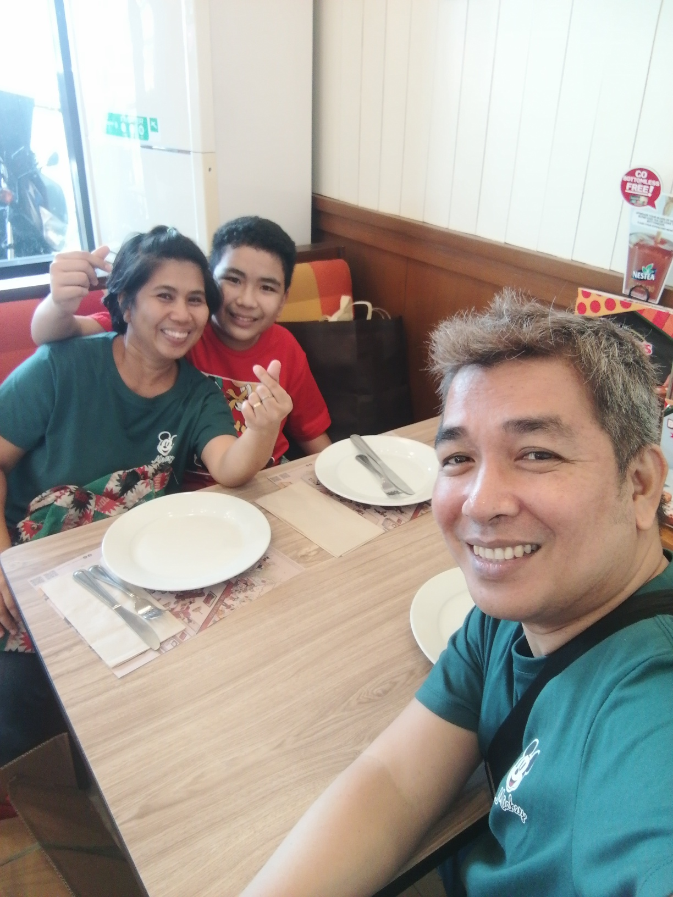

Welcome to my world ~ Here you can learn more about me, my personality, hobbies, dreams, and everything that makes me who I am!
I.T. Instructor • Wife • Mother
Loves cute aesthetics, Korean Series,
cartoons, music, and shopping.

I.T. instructor , teaches with patience, humor, and a spark that shows I am young at heart. At home, a loving wife and a devoted mother. Drahcir, my son is my greatest inspiration, reminding me daily that learning never stops and that curiosity is a gift to be nurtured. I balances family and career finding joy in small moments—whether it’s helping my son with homework, sharing laughter at the dinner table, or simple chit chat with my husband.
As an I.T. instructor, wife, and mother, my Piscean traits shine in unique ways: In teaching, my empathy and creativity help students feel supported and inspired. In family life, my compassion and intuition makes me a nurturing wife and mother. Being “young at heart” reflects Pisces’ playful, imaginative side—, balances responsibility with joy.